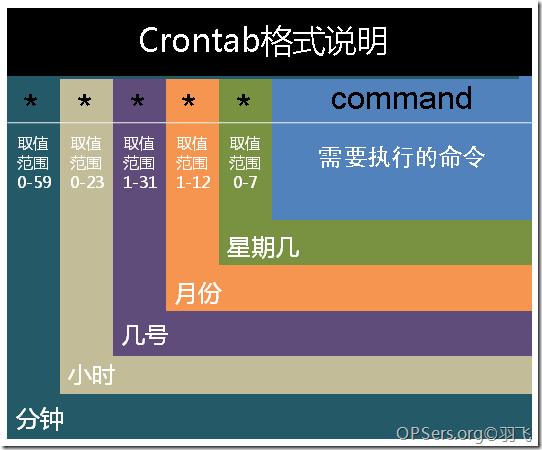

转自 竹子-博客_crontab命令
一、crond简介
crond是linux下用来周期性的执行某种任务或等待处理某些事件的一个守护进程，与windows下的计划任务类似，当安装完成操作系统后，默认会安装此服务工具，并且会自动启动crond进程，crond进程每分钟会定期检查是否有要执行的任务，如果有要执行的任务，则自动执行该任务。
Linux下的任务调度分为两类，系统任务调度和用户任务调度。
系统任务调度：系统周期性所要执行的工作，比如写缓存数据到硬盘、日志清理等。在/etc目录下有一个crontab文件，这个就是系统任务调度的配置文件。用户可以使用 crontab 工具来定制自己的计划任务。所有用户定义的crontab 文件都被保存在 /var/spool/cron目录中。其文件名与用户名一致。
二、crontab文件格式：
用户所建立的crontab文件中，每一行都代表一项任务，每行的每个字段代表一项设置，它的格式共分为六个字段，前五段是时间设定段，第六段是要执行的命令段，格式如下：

在以上各个字段中，还可以使用以下特殊字符：
星号（）：代表所有可能的值，例如month字段如果是星号，则表示在满足其它字段的制约条件后每月都执行该命令操作。
逗号（,）：可以用逗号隔开的值指定一个列表范围，例如，“1,2,5,7,8,9”
中杠（-）：可以用整数之间的中杠表示一个整数范围，例如“2-6”表示“2,3,4,5,6”
正斜线（/）：可以用正斜线指定时间的间隔频率，例如“0-23/2”表示每两小时执行一次。同时正斜线可以和星号一起使用，例如/10，如果用在minute字段，表示每十分钟执行一次。
- 在crontab中%是有特殊含义的，表示换行的意思。如果要用的话必须进行转义\%，如经常用的date ‘+%Y%m%d’在crontab里是不会执行的，应该换成date ‘+\%Y\%m\%d’。
- 每月几号和星期几是或的关系，这两个条件只要满足任何一个定时任务就可以执行。
三、crond服务
- 安装crontab：
yum install crontabs
- 查看crontab服务状态：
service crond status
- 手动启动crontab服务：
service crond start
- 加入开机自动启动：
chkconfig –level 35 crond on
四、crontab命令详解
用户使用crontab命令来管理各种定时任务。
usage: crontab [-u user] file
crontab [-u user] { -e | -l | -r }
crontab [-u user] file 用指定的文件替代目前的crontab。
crontab [-u user]-l 列出用户目前的crontab.
crontab [-u user ]-e 编辑用户目前的crontab.
crontab [-u user] -r 删除当前的crontab文件。
五、使用实例
每1分钟执行一次command
* * * * * command
每小时的第3和第15分钟执行
3,15 * * * * command
每隔5分钟执行
*/5 * * * * command
每天晚上11到早上7点，每隔半小时执行
0,30 23-7 * * * command
*/30 23-7 * * * command
每个星期一的上午8点到11点的第3和第15分钟执行
命令：
3,15 8-11 * * 1 command
六、使用注意事项
注意环境变量问题
有时我们创建了一个crontab，但是这个任务却无法自动执行，而手动执行这个任务却没有问题，这种情况一般是由于在crontab文件中没有配置环境变量引起的。
在crontab文件中定义多个调度任务时，需要特别注意的一个问题就是环境变量的设置，因为我们手动执行某个任务时，是在当前shell环境下进行的，程序当然能找到环境变量，而系统自动执行任务调度时，是不会加载任何环境变量的，因此，就需要在crontab文件中指定任务运行所需的所有环境变量，这样，系统执行任务调度时就没有问题了。
不要假定cron知道所需要的特殊环境，它其实并不知道。所以你要保证在shelll脚本中提供所有必要的路径和环境变量.
注意清理系统用户的邮件日志
每条任务调度执行完毕，系统都会将任务输出信息通过电子邮件的形式发送给当前系统用户，这样日积月累，日志信息会非常大，可能会影响系统的正常运行，因此，将每条任务进行重定向处理非常重要。
例如，可以在crontab文件中设置如下形式，忽略日志输出：
0 */3 * * * /usr/local/apache2/apachectl restart >/dev/null 2>&1
“/dev/null 2>&1”表示先将标准输出重定向到/dev/null，然后将标准错误重定向到标准输出，由于标准输出已经重定向到了/dev/null，因此标准错误也会重定向到/dev/null，这样日志输出问题就解决了。
其他注意事项
新创建的cron job，不会马上执行，至少要过2分钟才执行。如果重启cron则马上执行。